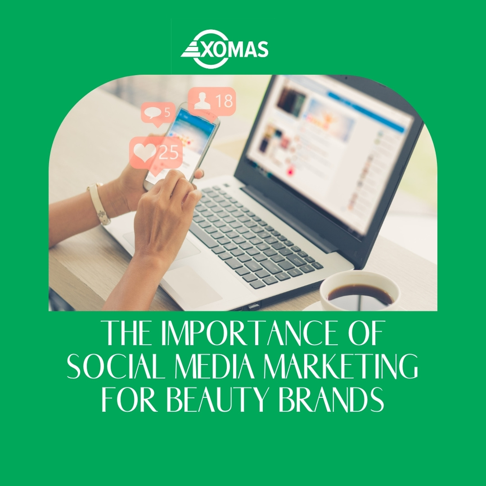

The Importance of Social Media Marketing for Beauty Brands
by Yusuf Yusra
Posted on March 3, 2021 at 12:00 PM

Let’s begin with a simple fact: your beauty business needs social media marketing.
Regardless of whether you are a hairdresser, make-up artist, spa owner, or skincare therapist. Social media is an essential piece of your business marketing strategy.
Social media marketing (SMM) involves the use of social platforms and social networks to market a company’s products and services. Social media marketing provides you with a way to attract new customers, build relationships with existing customers, and promote your products & services.
TYPES OF SOCIAL MEDIA WEBSITES
There is a general misconception about the term “social media”. Most people consider social networking websites like Facebook and Twitter once they hear the term “social media”, but this term refers to different websites that allow interaction among the users and therefore the passage of information through a different medium
Depending on the sort of social profiles, social processes, sort of interaction, and sort of content being exchanged, six types of social media are established which are:
- Collaborative projects – They are medium like online magazines, wikis, question and answer platforms, etc.
- Blogs and microblogs – This includes networks such as Twitter and Tumblr, where the content is shared within the sort of short or long blog articles.
- Content communities – Websites like YouTube, Vine, etc. where content is shared, after which users can interact by sharing impressions about the content.
- Social networking websites – This category includes the websites people are most ordinarily identifying as social media generally. Websites like Facebook and Google+ are in this category.
- Virtual game-worlds – one of the foremost popular websites during this category is World of Warcraft.
- Virtual social worlds – Game-like design allows users to make virtual identities and to interact with other users through a web platform.
6 Awesome Ways social Media Marketing can help beauty brands
1. Helps Build Awareness
People who don’t know about your business can’t become your customers. Social media provides a means of increasing your visibility among potential customers, letting you reach a large audience by employing a great deal of your time and energy. Here’s a fact: social media content gets attention. As you can see below, we were able to create awareness among1000 people with a single post.
However, it’s really easy for a consumer to become overwhelmed on Facebook, Twitter, Instagram, and other social media platforms filled with noise from companies trying to promote their brands. How can a company create relevant content in such a crowded space? This is where you need the service of social media marketing experts. Determine what you want to achieve from social media to develop a social media strategy for brand awareness.
2. Establish Your Brand As A Topical Authority
Topical authority means your business is a trusted & reliable source of information on a given subject or topic.
So how does social media help in establishing your brand as topical authority? The more you provide helpful & relevant content on a given topic on social media, the more authoritative your page becomes, the more traffic you will get and the more search engines will pick your page as an authority on that subject.
Making a positive first impression through social media shows that your business is trustworthy, knowledgeable, and approachable.
Look for ways to demonstrate your expertise as a thought leader in your industry—like writing pieces related to your expertise or expanding on your company’s mission. By showing what your business offers and values, you will establish confidence in potential customers.
3. Show Authenticity
Customers don't value businesses that publish dry, corporate-style social media posts.
Instead, let your brand’s personality shine by being authentic in everything you share on social media. Communicate in your brand voice.
4. Encourage Engagement
This simply means the possibility of the user taking part in a certain activity, such as liking, commenting, clicking, or sharing as a result of your encouragement. Social media encourages instant interaction, relationship building, and customer loyalty. As you represent a business on social media, your goal is to be active and engaging, to inspire your social media followers to do a certain action. The plan of activity on social networks should be created in such a way that it engages and inspires the audience which will help you reach them in a way that it is available on the specific social network.
If a post is engaging, it means that users find it interesting, helpful, insightful, unique, etc. Having in mind that these kinds of characteristics define high-quality content, it is obvious that people are more likely to respond if they see value in a post.
5. Boost Sales
Okay fans, here comes the best bet, arguably, the most important reason to use social media: you can make a huge amount of money selling your beauty products online. Sponsored info on timelines, videos with CTAs, cross-channel retargeting, and shoppable posts are the mainstay of social media.
Marketing costs add up, and not every business can afford huge campaigns. But you will get a great deal of value in return with social media advertising. With ads on platforms such as Facebook and Instagram, You can grow your business, regardless of its size. Even if platforms such as Instagram are primarily geared towards engagement, there are strategic ways to increase sales on these platforms geared towards engagement, there are strategic ways to increase sales on these platforms.
6. Provide Support
Social platforms have successfully collapsed the barriers between brands and their customers. Now, instead of calling a customer customer care line, many people turn to instagram, Facebook or Twitter to contact the business.
Social media allows for immediate interaction and customer feedback. Businesses can also respond to their customers right away. Build a good reputation by offering great support through social channels.
Social media allows for immediate interaction and customer feedback. Businesses can also respond to their customers right away
Social media is an important part of marketing products and services, but it doesn’t have to be stressful to manage. Social media marketing is now made easy with help of social media agencies/ digital marketing companies.
Ready to make an impact on social media? Let’s connect, we will get you results that make you smile.
The Benefits of Having Google My Business Profile for Your Beauty Business
by Yusuf Yusra
Posted on March 3, 2021 at 12:00 PM

The pressing need for organizations like spas and beauty salons to go digital is now on the rise more than ever. Your brand’s online presence is as important as the offline counterpart. You need to get an understanding of how people search for information online and use this to your salon’s advantage. Before we dive into letting you understand the importance of Having Google My Business (GMB) profile to your beauty brand, Let’s quickly have a look at the meaning of GMB.
What exactly is Google My Business?
This is a free tool created by Google for businesses for businesses and organizations to manage their online presence by listing their location on google Search and Maps
It allows you to list your business locally on the world’s no 1 search engine, Google. This tool helps customers find and patronize your brand when they carry out simple searches related to what offer online. Now let’s go back to answer the question, Why use Google My Business? The listing includes giving information like
- Name
- Address
- Phone Number
- Opening Hours
- Website
- Category etc
About 40% of searches on Google have local intent, so why aren’t you taking advantage? This post will teach you how to
TThe Importance of using Google My Business to manage your Beauty Business Profile(s)
1. You get to show up in Google Maps Searches
One factor people take into consideration when searching is proximity i.e How close that listed business is to their location.
When users search for ”beauty Salon around me’’ and you have successfully completed the listing and verification steps, you can be rest assured you will get found. I am sure you’re getting a clearer picture of why google my business is important.
2. You Increase your chances of getting into Google’s Local 3 packs
The one-time 7 pack has now been limited to 3 packs. Most brands try out different SEO tricks to appear on this list, but by simply creating and verifying your business on GMB, you are growing your chances of getting to be listed on this ‘’ most wanted list’’. Businesses that get listed here get more clicks and conversions than those that aren’t.
3. Earn your customer’s trust
People get to trust your brand when your business is listed. This is possible because of the rigorous process and multiple verification processes it takes to get your brand verified on GMB. Google gives consumers a platform they can rely on and consequently they trust you once you appear in local search results.
4.You get star ratings that heighten your appeal
One thing most consumers do now is read product or service reviews before they proceed to purchase an item. An item with a poor rating gets ignored and conversely, those with higher reviews get more sales. GMB gives customers an avenue to review your product/ service for others to see. If you deliver quality service, reviews about your business will drive more customers to your brand. Reviews are important especially when the competition is large in your space. Are you now learning how to use google my business effectively yet?
5.Rank higher in results
A constant supply of information that is top-notch quality and accurate will make you rank higher in her search and map results. Google will like your business more when it communicates more information about your business to your customers. This describes the expression perfectly, ‘’Google only loves you when everyone loves you first. Consequently, It will rank you higher.
6. Increased engagement for your Salon/Spa
A Google My Business profile for your beauty brand will help double the engagement rate for your brand. Customers can book a session, make a call, visit your website, etc., with just a single tap.
7. Offers Free Advertising
This is a key example of how Google my business works. This is a form of advertising that is also targeted with no hidden charges. However, this shouldn’t deter you from running paid ads or working on the SEO of your website.
8. An opportunity to project your specialization
GMB affords you an avenue to project what your brand deals in. It achieves this by providing basic info as it returns the results.
9. ALearn More About Your Customers
The insights section of a GMB page gives you a better grasp of how to satisfy your customers’ needs. This gives you analytics as to how people are interacting with your brand
Google my business is free! It only takes a little bit of effort to set it up. We can help you drive more sales by listing your business on the world’s no. 1 search engine. We will help you review your Google Insights and find out what information or content is bringing more traffic to your brand. Click here now to speak to an expert at our agency today for your business listing on Google My Business.